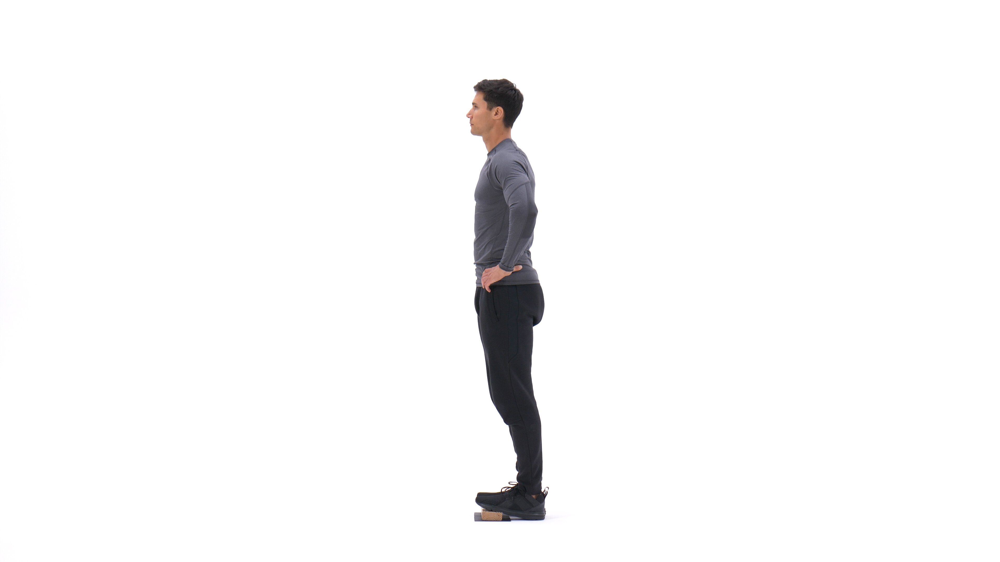
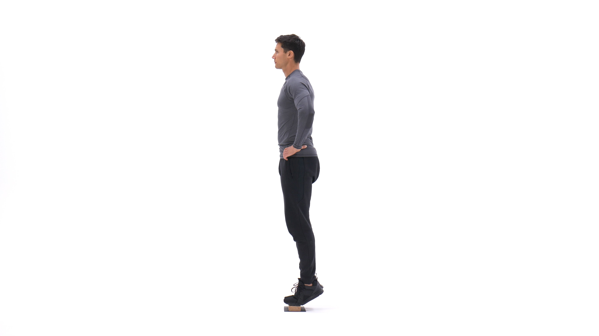

The standing calf raise is a popular movement to target the calf muscles of the lower leg, and in particular the gastrocnemius muscles. When unweighted, it is usually performed for high reps or for time.
1. Adjust the padded lever of the calf raise machine to fit your height.
2. Place your shoulders under the pads provided and position your toes facing forward (or using any of the two other positions described at the beginning of the chapter). The balls of your feet should be secured on top of the calf block with the heels extending off it. Push the lever up by extending your hips and knees until your torso is standing erect. The knees should be kept with a slight bend; never locked. Toes should be facing forward, outwards or inwards as described at the beginning of the chapter. This will be your starting position.
3. Raise your heels as you breathe out by extending your ankles as high as possible and flexing your calf. Ensure that the knee is kept stationary at all times. There should be no bending at any time. Hold the contracted position by a second before you start to go back down.
4. Go back slowly to the starting position as you breathe in by lowering your heels as you bend the ankles until calves are stretched.
5. Repeat for the recommended amount of repetitions.
Caution: If you suffer from lower back problems, a better exercise is the calf press as during a standing calf raise the back has to support the weight being lifted. Also, maintain your back straight and stationary at all times. Rounding of the back can cause lower back injury.
Variations: There are several other ways to perform a standing calf raise. A barbell instead of a machine can be used instead as well as dumbbells, one leg or two legs at a time. Refer to the exercise descriptions of these movements below. A smith machine can be used for calf raises as well.
1. Stretches and targets the calf muscles to add size and strength.
2. Can alter tempo or add pauses to increase intensity.
3. Can be performed two legs at once, one leg, or alternating.
4. Can be performed anywhere, any time.
This is the Calve Raise in the down position.
This is the Calve Raise in the up position.
